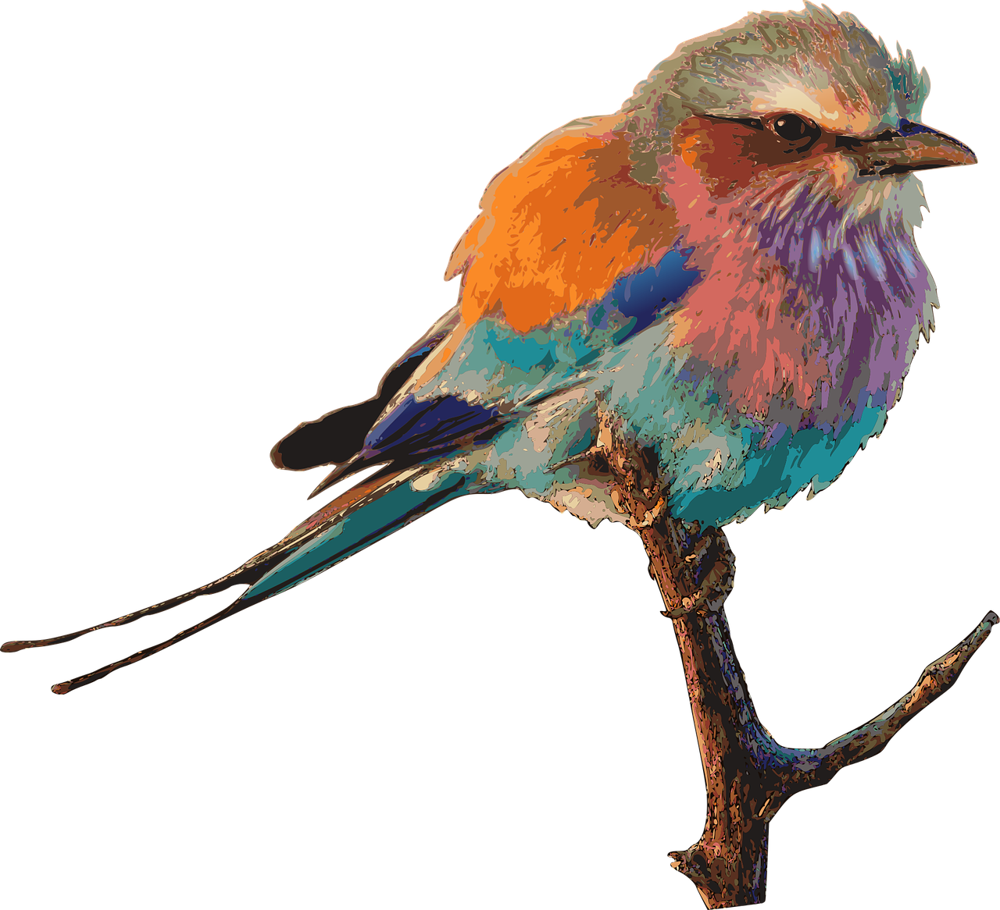

-
Search
enter the protein name and species name to obtain target seqeunce
Try it now -
Analysis
Conservation analysis, Motif searching, and phylogenetic tree reconstruction
Try it now -
History
enter the tracking ID to retrieve analysis and query history
Try it now
TRY EXAMPLE DATA
Here is an example dataset (glucose-6-phosphatase from Aves). You can copy the tracking ID of this example and view the analysis results, including sequence conservation plot, motif searching and phylogeny reconstruction! Watch the guiding video to learn how to explore the analyzed results on this website.
copy tracking id of example data

-
HELP
-

ABOUT & CREDIT
-
CONTACT ME
This page is designed to provide a clear and user-friendly guide on how to use the key functionalities of this website. Whether you are a biologist looking to analyze protein sequences or a researcher exploring motif patterns, this guide will walk you through the features step by step.